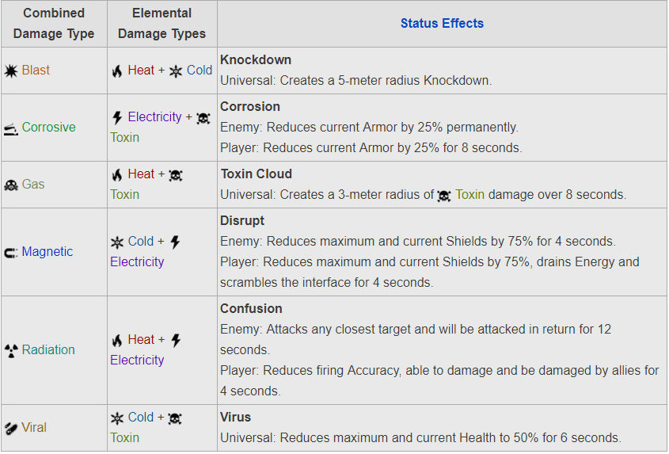
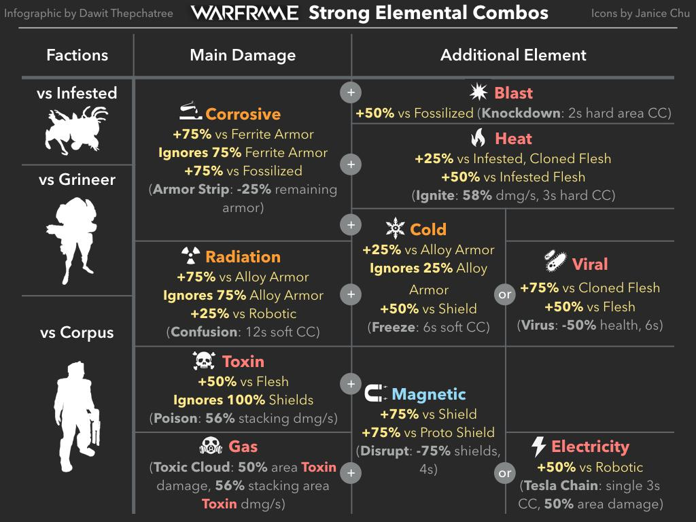
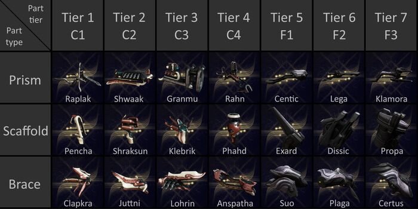
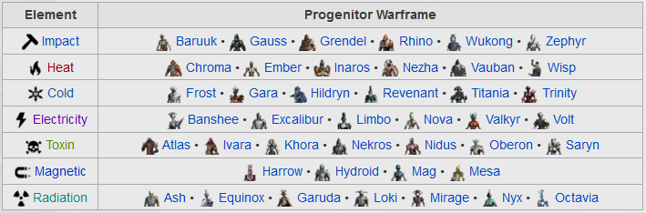

<ion-header class="ion-no-border">
  <ion-toolbar color="primary">
    <ion-buttons slot="start">
      <ion-menu-button></ion-menu-button>
    </ion-buttons>
    <br>
    <ion-title>Extras</ion-title>
    <br>

    <ion-buttons slot="end">
      <ion-button>
   <!--    <ion-button (click)="actualizar()"> -->
          <ion-icon slot="icon-only" name="refresh-outline"></ion-icon>
      </ion-button>
    </ion-buttons>

  </ion-toolbar>

</ion-header>

<ion-content>
  <!--   Elemental Damage   -->
  <ion-card>
    
    <ion-card-content>
      <ion-card-title>
        Elemental Damage     
      </ion-card-title>
    </ion-card-content>
  </ion-card>
  <!-- Enemy Damage -->
  <ion-card>
    
    <ion-card-content>
      <ion-card-title>
        Enemy Damage     
      </ion-card-title>
    </ion-card-content>
  </ion-card>
    <!-- Amp -->
    <ion-card>
      
      <ion-card-content>
        <ion-card-title>
          Amp     
        </ion-card-title>
      </ion-card-content>
    </ion-card>
  <!-- Kuva Lich -->
  <ion-card>
    
    <ion-card-content>
      <ion-card-title>
        Kuva Lich     
      </ion-card-title>
    </ion-card-content>
  </ion-card>
</ion-content>
